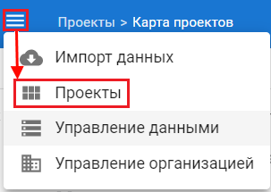
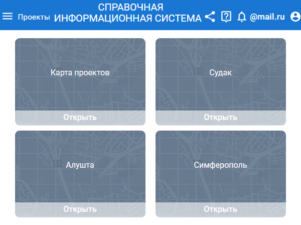

Управление проектами
Страница с проектами
Список всех существующих проектов отображается на странице управления проектами.
Страница «Управление проектами» позволяет создать, открыть или удалить проект.
Для перехода на страницу «Проекты» нажмите соответсвующую кнопку (1).

